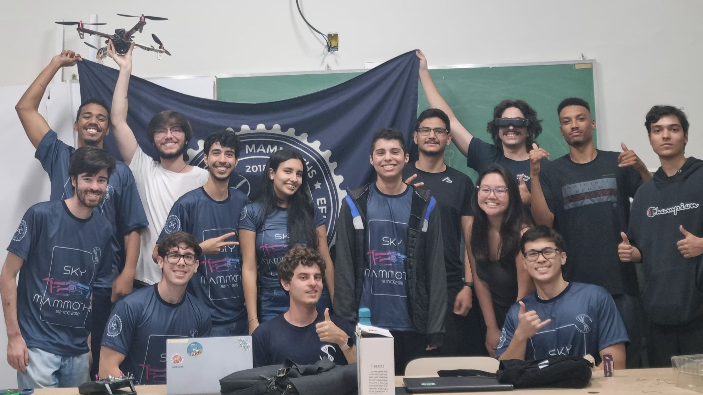

Bem-vindo à Sky Mammoths!
Fundada em 2018, a Sky Mammoths é uma entidade responsável pelo emprego de drones em prol do bem da sociedade.
Estudamos os melhores meios os quais podemos aplicar suas funcionalidades dentro de projetos sociais para que ajudemos o meio ambiente e comunidades como um todo.
Além disso, também visamos usá-los em competições de corridas para explorar a aerodinâmica, eletrônica e controle de voo em ambientes desafiadores.
Explore nosso site para saber mais sobre nossos projetos, nossa missão e como você pode se conectar conosco!